Lançamento no Porto Maravilha
Arcos do Porto Residencial
Arcos do Porto Residencial traz inspiração carioca para o Porto Maravilha, com apartamentos de 1 a 2 quartos, 30 a 58 m², lazer completo e previsão de entrega para 2028.

Diferenciais
Lazer completo no Porto Maravilha
Galeria
Fotos do empreendimento
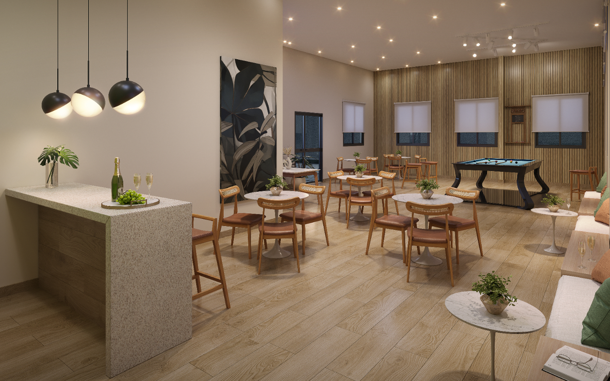
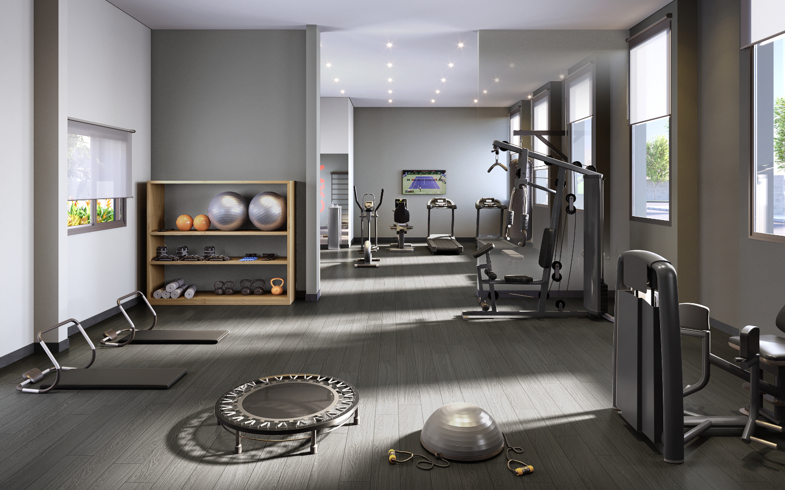
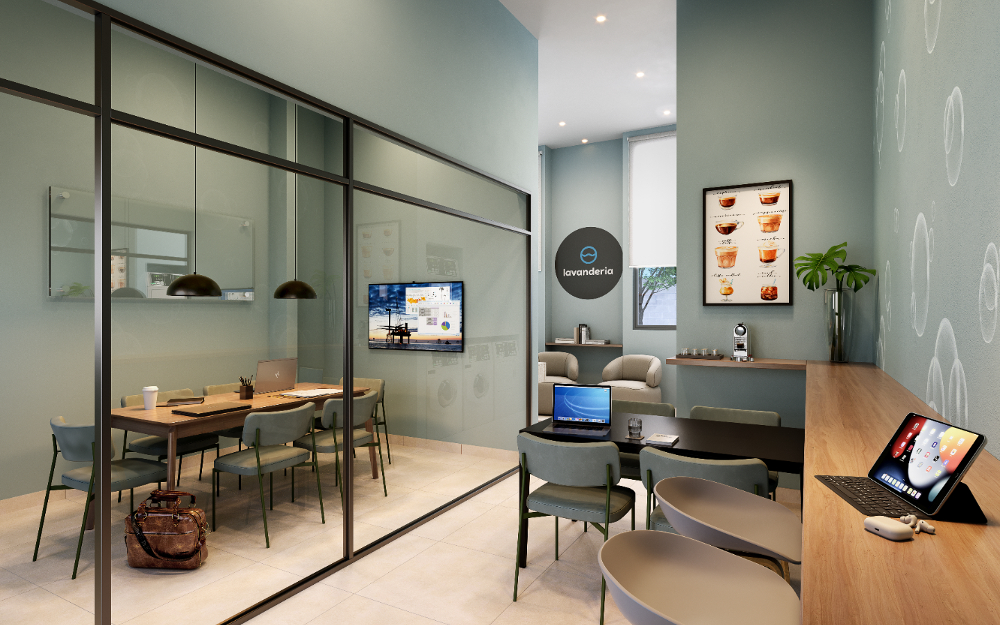
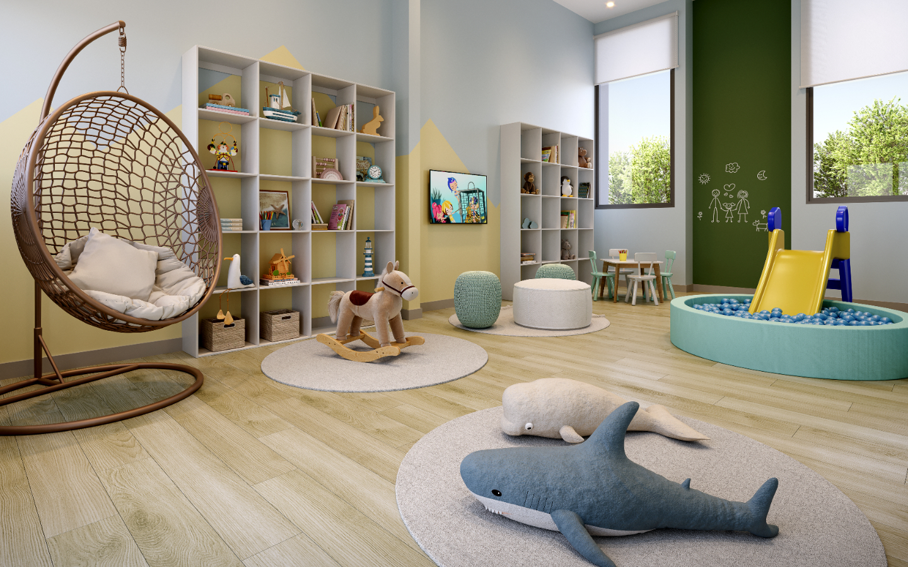
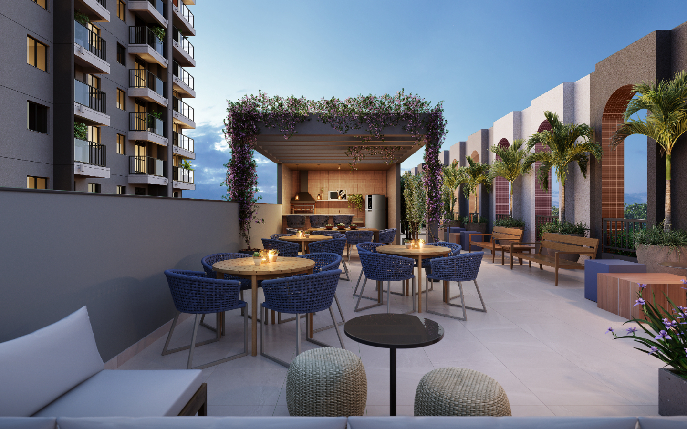
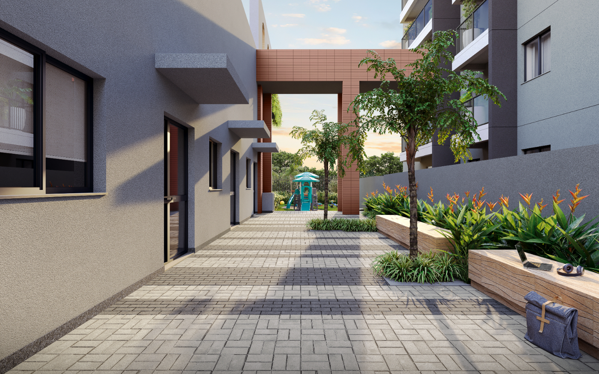
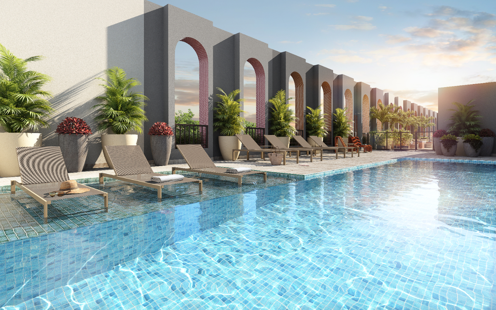
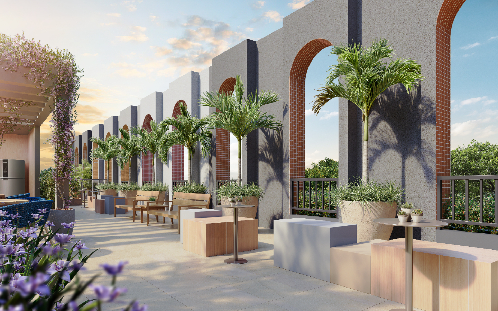
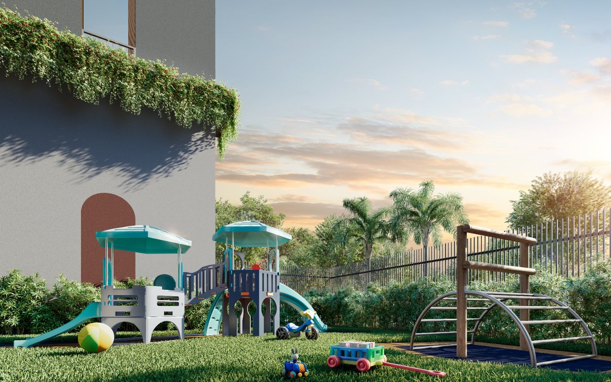
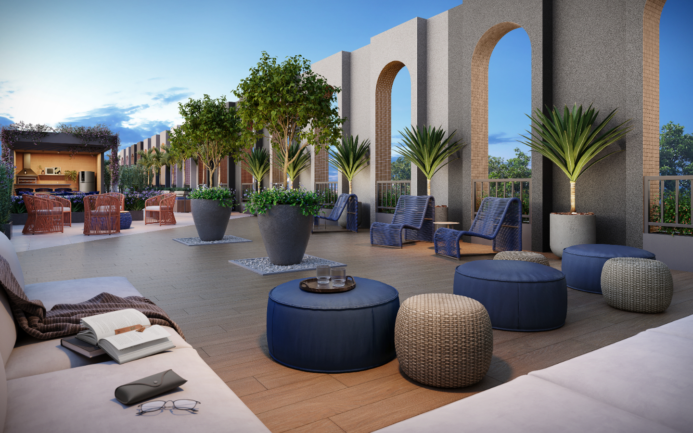
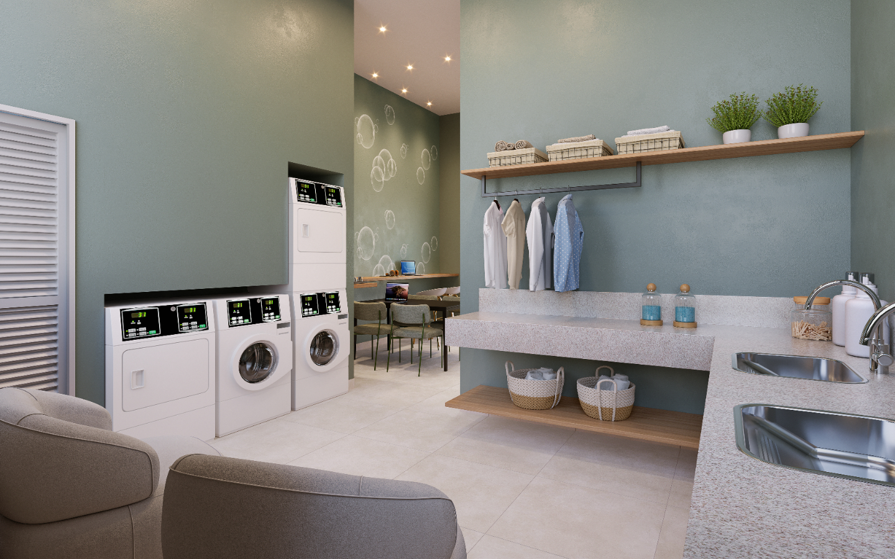